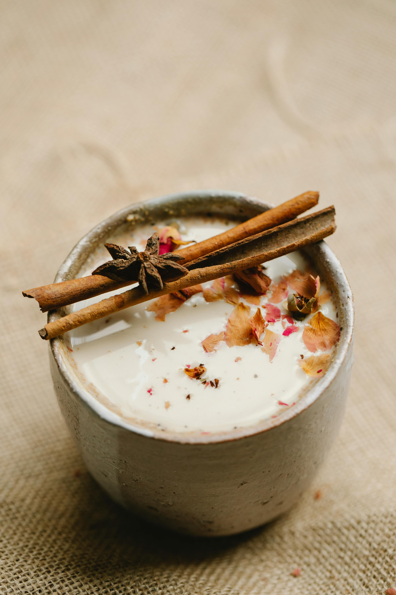
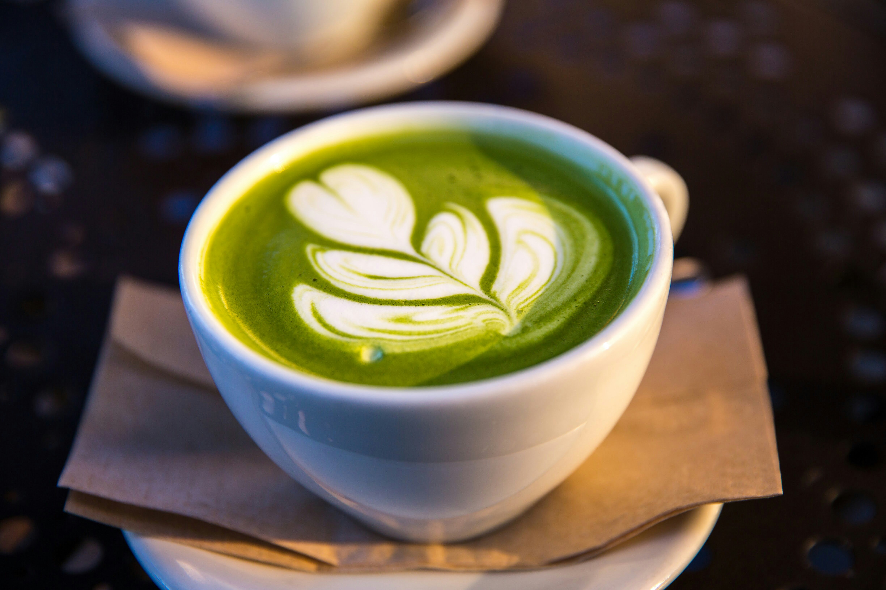
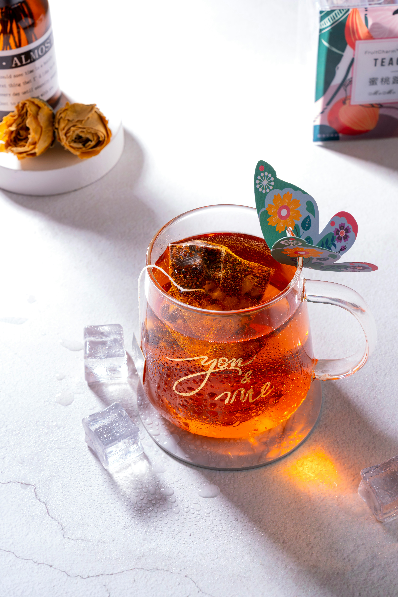

Masala Chai 🔥

Origin: India

Description: A bold, spicy black tea brewed with milk and fragrant spices like cardamom, cinnamon, and ginger. Masala Chai is perfect for chilly mornings or energizing afternoons.
Flavor Profile: Spicy, creamy, warming
Best enjoyed with: Biscuits, samosas, rainy weather ☔
Learn More 🔎 Buy Now ₹Noon Chai 🌸

Origin: The Kashmir Valley – known for its snow-capped mountains and rich food traditions 🏔️
Description: A salty, pink-colored tea made from green tea leaves, baking soda, and milk — traditionally enjoyed with dry fruits and bread. Its unique flavor and color make it a delicacy of Kashmiri culture.
Flavor Profile: Earthy, salty, creamy
Best enjoyed with: Kashmiri bread (Kulcha), nuts, winter mornings ❄️
Learn More 🔍 Buy Now ₹Matcha 🍃

Origin: Japan

Description: A vibrant green tea powder made from shade-grown leaves. Unlike regular teas, Matcha is whisked into water and consumed whole, giving you a rich dose of antioxidants and energy. It’s smooth, focused, and deeply calming.
Flavor Profile: Grassy, earthy, umami
Best enjoyed with: Traditional Japanese sweets (wagashi), quiet mornings, focused work sessions 🧘
Learn More 🔍 Buy Now ₹Rooibos Tea 🍂

Origin: South Africa

Description: Rooibos is a naturally caffeine-free red herbal tea made from the leaves of the Aspalathus linearis plant. With a smooth, slightly sweet flavor, it's a comforting evening tea and a popular choice for those seeking calm and clarity.
Flavor Profile: Nutty, smooth, slightly sweet
Best enjoyed with: Quiet nights, honey biscuits, and a good book 📖
Learn More 🔍 Buy Now ₹